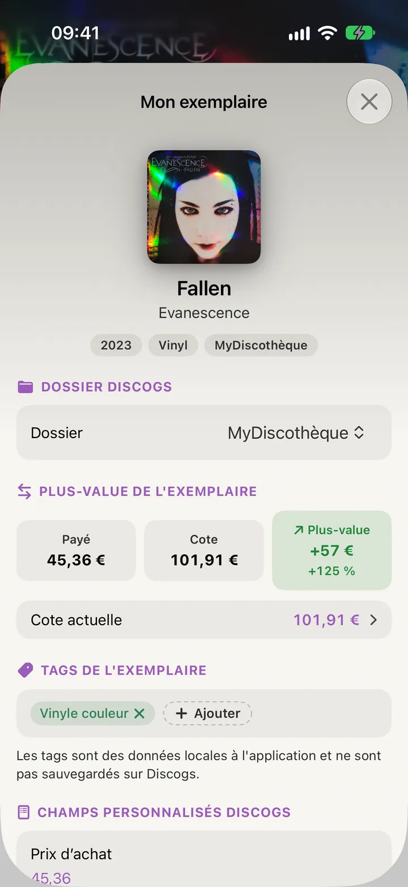
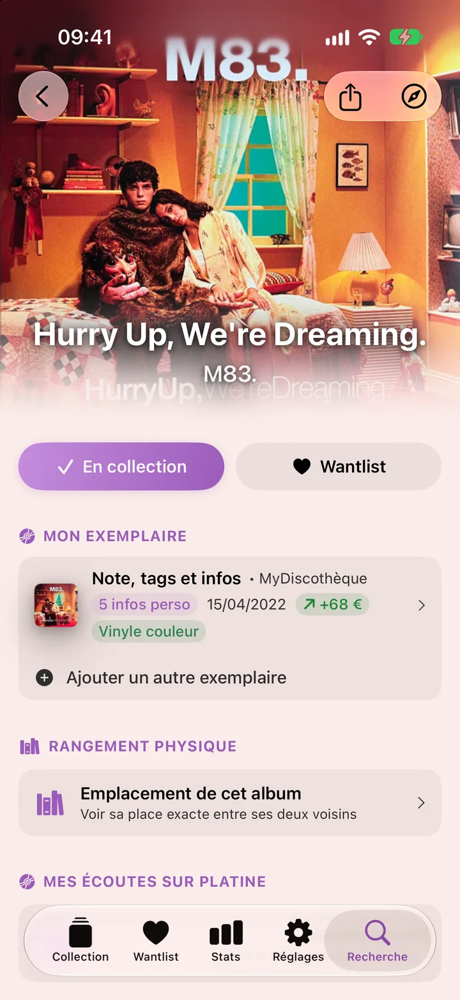
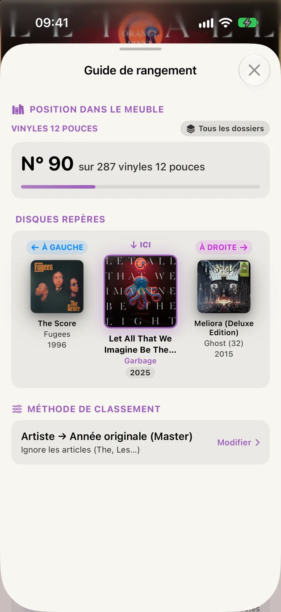
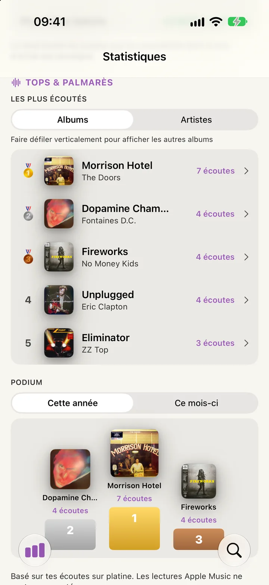
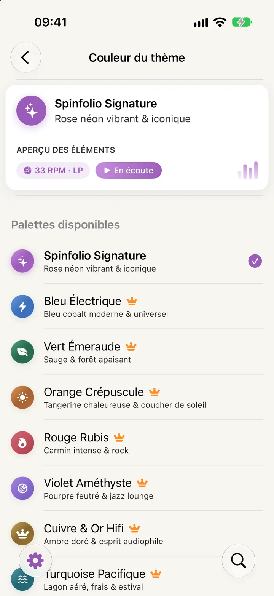

Sais ce que valent vraiment tes disques.
Renseigne le prix payé pour chaque exemplaire et compare-le à la cote Discogs : plus-value de chaque album, et pour toute ta collection avec « Investi vs cote actuelle ».

Spinfolio est le carnet de collection des passionnés. Scanne, classe et retrouve chaque album en quelques secondes, avec ta collection et ta wantlist synchronisées avec Discogs.
Ta collection et ta wantlist Discogs, partout dans ta poche. Choisis l'affichage qui te parle : le choix est retenu séparément pour chacune.

Titres, crédits, photos, vidéos et infos de pressage au même endroit. Quand tu poses un disque sur ta platine, note l'écoute : elle reste visible sur l'écran verrouillé, et s'arrête toute seule à la fin.

Tout ce qu'il faut pour tenir ta discothèque à jour est gratuit, sans limite d'albums.
Ajouts illimités. Les ajouts, retraits et notes sont répercutés sur ton compte Discogs.
Identifie un disque par son code-barres et ajoute-le à ta collection ou à ta wantlist.
Trois affichages, dix tris, filtres et barre de navigation alphabétique.
Classe à ta façon, avec tes tags, une note sur 5 et tes dossiers Discogs.
Note ce que tu as payé et compare avec la cote Discogs, disque par disque.
Compteurs, derniers ajouts, graphiques par genre, support, label et année, et estimation de la valeur.
Note chaque écoute, retrouve ton disque en cours sur l'écran verrouillé.
Titres en entier avec un abonnement actif, extrait de 30 secondes sinon.
Thème clair ou sombre, et la palette Signature, aux couleurs de l'app.
Suivi de la valeur, rangement, alertes de prix, hors ligne, iCloud : le Premium transforme Spinfolio en vrai outil de collectionneur.
Renseigne le prix payé pour chaque exemplaire et compare-le à la cote Discogs : plus-value de chaque album, et pour toute ta collection avec « Investi vs cote actuelle ».

Le guide te donne la position du disque dans ton meuble, entre ses deux voisins, selon ta méthode de classement. Il s'ouvre aussi juste après l'ajout d'un disque.

Chaque écoute sur ta platine alimente tes palmarès et tes podiums du mois et de l'année, à côté de l'estimation de ta collection.

Fixe le prix maximum que tu veux payer pour un disque de ta wantlist : tu es prévenu dès qu'une annonce du Marketplace Discogs est à ton prix ou moins.

Emporte ta collection et ses pochettes haute résolution pour fouiner en brocante. La synchro automatique ne se lance jamais en 4G/5G.
Tes tags, écoutes, alertes et préférences suivent ton compte. Couper la synchro n'efface rien.
Enchaîne les codes-barres chez le disquaire ou en brocante, puis ajoute-les d'un coup à ta collection ou ta wantlist.
Excel, Numbers ou Sheets : tous tes disques avec métadonnées, tags et notes.
La liste de tes albums avec pochette, état et prix d'achat, à présenter comme justificatif.
Donne à ton app l'ambiance qui te ressemble, du bleu électrique au marron espresso.
La palette Signature est offerte. Les neuf autres sont réservées au Premium. Essaie-les : cette page change de couleur avec toi.

Commence gratuitement. Passe en Premium quand tu veux, avec 7 jours d'essai sur l'abonnement annuel.
| Fonctionnalité | Gratuit | Premium |
|---|---|---|
| Collection | ||
| Collection et wantlist Discogs, sans limite | ✓ | ✓ |
| Trois affichages, dix tris, filtres, tags et notes | ✓ | ✓ |
| Recherche et scan d'un code-barres | ✓ | ✓ |
| Fiches détaillées, plusieurs exemplaires | ✓ | ✓ |
| Statistiques et estimation de la collection | ✓ | ✓ |
| Prix d'achat et cote par exemplaire | ✓ | ✓ |
| Écoutes sur platine, Live Activity, widget | ✓ | ✓ |
| Lecture Apple MusicExtrait de 30 s sans abonnement Apple Music actif | ✓ | ✓ |
| Thème clair ou sombre, palette Signature | ✓ | ✓ |
| Réservé au Premium | ||
| Suivi de cotePlus-value par exemplaire et pour toute la collection | — | ✓ |
| Où ranger l'albumPosition dans le meuble, entre ses deux voisins | — | ✓ |
| Palmarès et podiums d'écoute sur platine | — | ✓ |
| Alertes de prix sur la wantlist | — | ✓ |
| Mode hors ligne | — | ✓ |
| Synchronisation iCloud | — | ✓ |
| Scan par lot | — | ✓ |
| Neuf palettes de couleurs | — | ✓ |
| Export CSV complet | — | ✓ |
| Déclaration de collection (PDF) | — | ✓ |
Sans engagement, résiliable à tout moment.
7 jours d'essai gratuit, puis 1,50 € par mois.
Un seul paiement, le Premium pour toujours.
Les abonnements se renouvellent automatiquement, sauf résiliation au moins 24 h avant la fin de la période en cours, depuis les réglages de ton compte Apple. Prix TTC, susceptibles de varier selon le pays.
Les réponses aux questions courantes, dans l'ordre où tu en auras besoin. Le même guide est disponible dans l'app.
Ta collection vit sur Discogs : Spinfolio en est une belle vitrine.
Astuce. Les ajouts, les retraits et les notes sont répercutés sur ton compte Discogs. Les tags, eux, restent propres à Spinfolio.
Cherche par nom ou scanne le code-barres.
Astuce. Maintiens « Collection » pour choisir un autre dossier.
La collection, ce sont les disques que tu possèdes ; la wantlist, ceux que tu cherches.
Scanne plusieurs disques à la suite, chez un disquaire ou en brocante.
Astuce. Un lot en cours est conservé : une confirmation te protège si tu fermes l'écran par erreur.
Liste, mosaïque ou carrousel : choisis ce qui te parle.
Astuce. Le bouton « Disque au hasard », en haut de la Collection, t'en propose un.
Jusqu'à dix tris, dans les deux sens, et une barre pour sauter à une lettre.
Astuce. Le tri « Meuble » suit ta règle de rangement (Réglages, section Collection & Rangement).
Par texte, dossier, tag ou support. Les filtres se cumulent.
Astuce. Avec plusieurs tags, seuls les disques qui les portent tous restent affichés.
Glisse une ligne, ou maintiens-la, pour écouter, ranger, modifier ou supprimer.
Astuce. « Ranger » est une fonction Premium.
Titres, crédits, photos, vidéos et infos de pressage, au même endroit.
Un même disque peut exister en plusieurs exemplaires, chacun avec son dossier.
Classe tes disques avec tes tags et une note sur 5.
Astuce. Les tags restent dans Spinfolio (synchronisés par iCloud avec Premium), pas sur Discogs.
Note ce que tu as payé et compare avec la cote Discogs.
Astuce. La plus-value (cote moins prix payé) est une fonction Premium, dans Stats.
Compteurs, derniers ajouts et estimation de la valeur de ta collection.
Astuce. Les compteurs et la cote demandent une connexion réseau ; le reste fonctionne aussi hors ligne.
Genres, supports, labels, artistes et années, en graphiques.
Astuce. L'année de sortie originale est retrouvée disque par disque : sur une grande collection, le calcul prend un moment.
Compare ce que tu as payé à la cote actuelle de ta collection.
Astuce. Le total investi ne compte que les exemplaires dont le prix d'achat est renseigné.
Tes albums et artistes les plus écoutés sur ta platine.
Astuce. Les lectures Apple Music ne sont pas comptées.
Touche « J'écoute » quand tu poses un disque sur ta platine.
Astuce. Lancer une nouvelle écoute interrompt celle en cours. La fiche compte tes écoutes et garde la date de la dernière.
Ton disque en cours reste visible, et l'écoute s'arrête toute seule.
Astuce. Chaque écoute alimente le palmarès de Stats (Premium).
Lis les titres en entier depuis une fiche, avec un abonnement Apple Music.
Astuce. Ces lectures ne comptent pas comme des écoutes sur platine.
Un disque de ta collection tiré au hasard chaque jour, sur ton écran d'accueil.
Le guide te donne sa position dans le meuble, entre ses deux voisins.
Astuce. Fonction Premium. Le guide s'ouvre aussi juste après l'ajout d'un disque à la collection.
Quatre règles, pour classer comme dans ton meuble.
Astuce. L'année originale vient du master Discogs ; le pressage peut être une réédition plus récente.
Articles, noms de famille, cas particuliers : tu règles l'ordre artiste par artiste.
Astuce. Ces réglages valent pour le meuble, la Collection et la Wantlist.
Vinyles, CD et cassettes se rangent séparément ; les dossiers Discogs, au choix.
Astuce. Par défaut, le guide compare avec toute ta collection, tous dossiers confondus.
Fixe le prix maximum que tu veux payer pour un disque de ta wantlist.
Astuce. Fonction Premium. Une pastille « ≤ prix » s'affiche ensuite sur la ligne.
La feuille montre la cote récente par état, pour viser juste.
Tu es prévenu dès qu'une annonce est à ton prix ou moins.
Astuce. Vérifie l'état exact du disque et les frais de port sur l'annonce Discogs.
Emporte toute ta collection et ses pochettes, même sans réseau.
Astuce. La synchro auto ne se lance jamais en 4G/5G, et au plus une fois toutes les 6 heures.
Tes tags, écoutes, alertes et préférences suivent ton compte sur tous tes appareils.
Astuce. Couper la synchro n'efface rien : à la réactivation, tout est fusionné. Elle est coupée pendant la démo.
Thème clair ou sombre, et palettes de couleurs pour toute l'app.
Astuce. Le thème Signature est inclus pour tous ; les 8 autres palettes sont Premium.
Un tableur pour tes outils, ou un PDF à présenter à un assureur.
Astuce. Le CSV inclut métadonnées, tags et notes ; le PDF, l'état et le prix d'achat.
Range ta collection à ta façon, et choisis où atterrissent les nouveaux disques.
Astuce. « Toujours demander » te propose le dossier à chaque ajout.
Consulte ton profil, déconnecte-toi ou efface tes données.
Astuce. « Supprimer mon compte… » propose d'effacer les données locales et iCloud, ou de supprimer le compte sur Discogs.com.